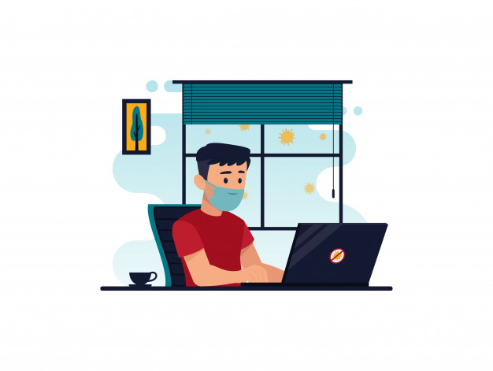

Hello Everyone.
Myself, Suraj Mahapatra. A young boy of age 19 years. My hometown is Bhubaneswar,Odisha. The capital city,smart city and
temple city of our state. I am living here with my family since 2007. In my family, I have my mother, father and my
elder sister.They are my constant support and they always care for me a lot. I am a simple and cheerful boy.
I have a very good friend circle. I love to live every small moment of life.
Educational life
My educational journey started in Rajahansi Nursery school,New Delhi. I have completed my primary schooling from there.Then I shifted to
Kendriya Vidyalaya No-1,Bhubnaeswar.I spent there my 12 years of educational life,starting from class 1 to till class 12. I took science as my stream
in class 11th & 12th. Currently,I am pursing my Bacheolar's degree in Computer Science and Engineering from Veer Surendra Sai University of
Technology,Burla.Hoping the rest of my educational journey to be succesfull and blessfull.
My Interests

I have a great interest in coding.I got the exposure into programming world in my school days. There are so many lines of codes written behind
the apps and softwares we use in our day to day life. The curosity to know how those things are made and written,I am gaining more and more interest
everyday. I have also interest in graphics designing. Currently I am learning Adobe Illustrator to design various objects and explore my knowledge
on that field. I love to smile when I see smile on someone's face.
My Skills
Starting from programming skills,I am an intermediate python programming learner. Currently,sharpening my skills to explore more. Coming
to soft skills, I am good at interpersonal skills, communication skills and time management skills. Language known to me are Odia,Hindi
and English. I am a part of NCC in our college. In sports activities,I am a good athlete(running race).I am very muuch sincere and honest
to my work.
List of My Hobbies
1.Photography and editing
2.Listening to music
3.Travelling